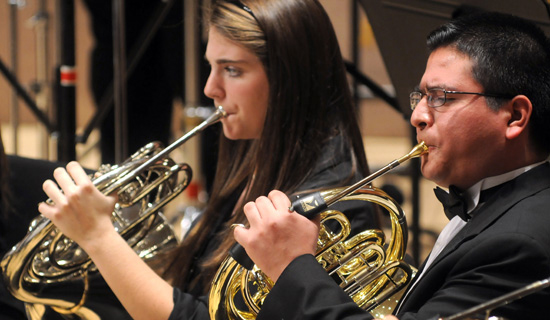

BRASS

The Brass Area seeks to promote growth of the total musician by assisting students in achieving a wide range of goals, from excelling as performers to learning the necessary skills to become master teachers.
Students develop skills through weekly lessons and ensemble participation, choosing from three orchestras, a wind ensemble, symphonic band, marching band, jazz ensembles, jazz combos, brass quintets and a trombone choir.
In addition to learning from our expert faculty, students attend master classes from brass greats such as Gene Pokorny, Gail Williams, the American Brass Quintet, Marshall Gilkes, Mark Inouye, Adam Frey, Michael Mulcahy, and others.
Active professional musicians, our brass faculty open up hands-on learning opportunities for their students outside the classroom. The Utah Symphony, for which many of our brass faculty perform, gives students up-close access at rehearsals and and has hired some top students as substitutes.
Brass area graduates have experienced great success in the professional market as teachers and performers; recent hires include positions at the University of Iowa, Brigham Young University-Idaho, Texas A&M International University and many public schools.